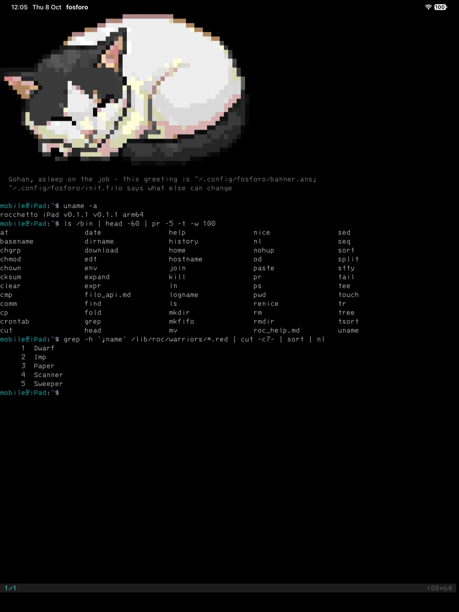
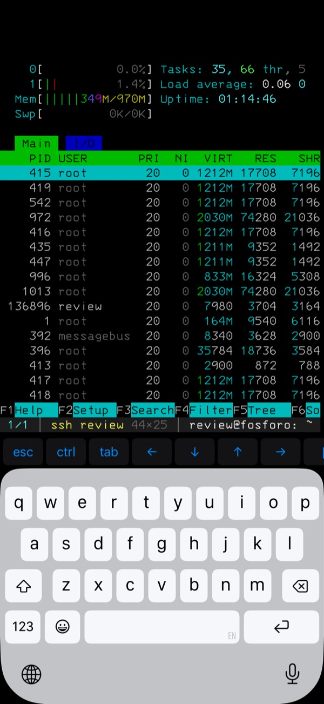
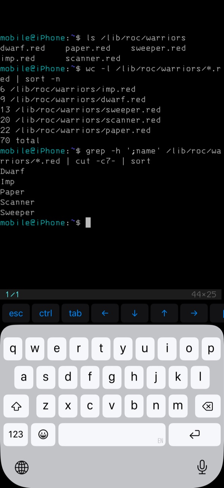
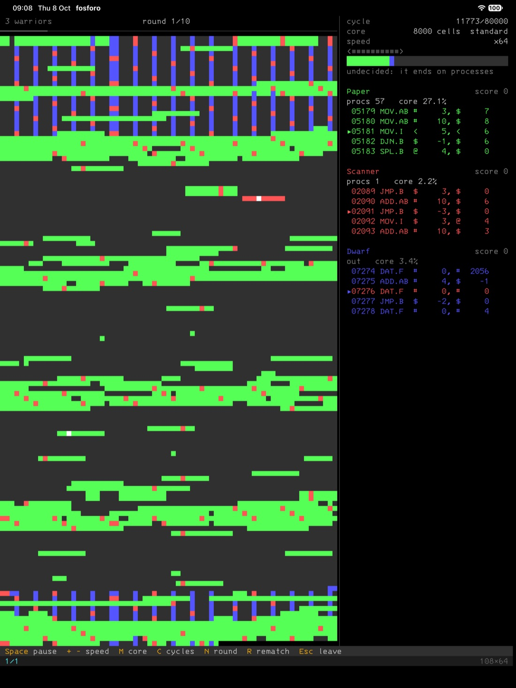
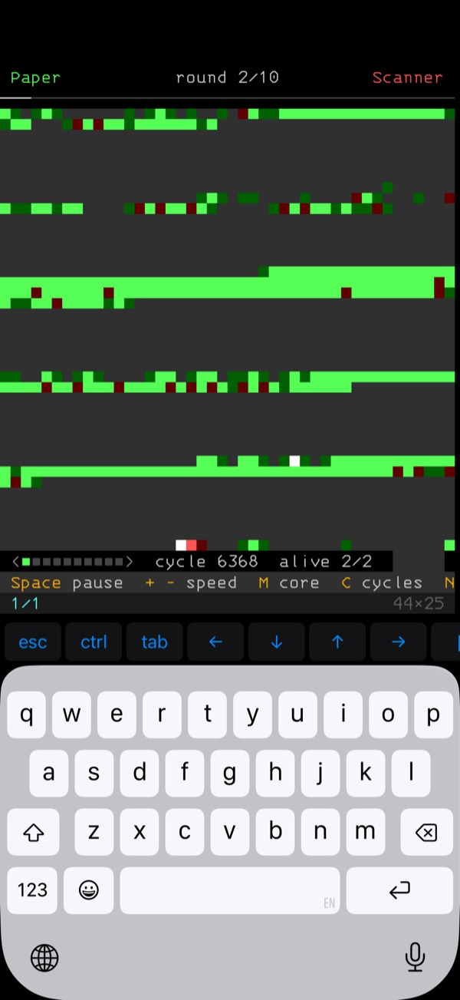

fosforo
A terminal for macOS, iPadOS and iOS. C and Swift, drawn with Metal. MIT.
Mac
Apple silicon and Intel, macOS 14 or later. Signed and notarized.
$ brew install --cask crgimenes/tap/fosforoOr the zip from the latest release: unzip and move fosforo.app to Applications.





On the Mac
A fast terminal made for developers: your login shell on a pty, with the system's ssh and git.
- Several sessions per window, ⌘T, ⌘1–9, a two-finger swipe to switch.
- A status bar with the session, the directory and git branch, or
ssh user@host. - Search in the scrollback (⌘F), copy mode (⇧⌘C), jumps between prompts (⌘↑/⌘↓).
- OSC 8 links, OSC 52 clipboard, OSC 9 and 777 notifications, OSC 133 prompt marks.
On the iPad and iPhone
The shell is rocchetto, built into the app: pipes, redirects, functions, history and sixty-odd commands, offline, with no account and no server.
sshandmoshare the app's own clients:~/.ssh/config, ProxyJump, port forwarding, agent forwarding.ssh-keygenandssh-copy-id, as on a computer.- Private keys can be encrypted by a key in the device's Secure Enclave, opened with Face ID, Touch ID or the passcode.
- A key bar over the on-screen keyboard; full hardware keyboard support on the iPad.
~/iCloudis the app's iCloud Drive folder; files come in from the Files app.
Both
- Full-screen programs such as vim, tmux and htop render as they should.
- Box drawing, blocks, braille and Powerline glyphs are drawn from geometry, so ANSI art has no seams.
- IBM 3270 is the default font; Japanese, Chinese and color emoji come from the system.
- Configuration, themes and hooks are Filo scripts in
~/.config/fosforo/init.filo.
(set on-blur (fn (arg) (theme "phosphor")))
(set on-focus (fn (arg) (theme "default")))Privacy
fosforo collects no data. It has no analytics, no crash reporting, no advertising and no accounts, and it sends nothing to its author or to anyone else.
What you type, your files and your keys stay on your device. Files you put in the app's iCloud Drive folder are stored in your own iCloud account. The app connects only to the machines you name, or that a program you run asks for. Removing the app removes everything it stored on the device.
Questions: open an issue.